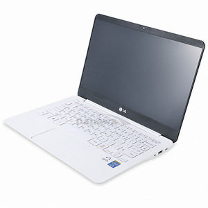

The LG 13ZD950 is a very light laptop (980g). It's the new version of the LG 13ZD940. Currently this laptop can be bought in South Korea. There are a lot of different models. Mine is equiped with a i3-5005U CPU, 8GB DDR3L and a 128GB SSD. Debian 8 doesn't fully support Broadwell graphics but the backports can fix this. In short, everything works well using backports. 
$ xrandr
Screen 0: minimum 8 x 8, current 1920 x 1080, maximum 32767 x 32767
eDP1 connected primary 1920x1080+0+0 (normal left inverted right x axis y axis) 293mm x 165mm
1920x1080 60.02*+ 59.93
1680x1050 59.95 59.88
1600x1024 60.17
1400x1050 59.98
1280x1024 60.02
1440x900 59.89
1280x960 60.00
1360x768 59.80 59.96
1152x864 60.00
1024x768 60.00
800x600 60.32 56.25
640x480 59.94
HDMI1 disconnected (normal left inverted right x axis y axis)
VIRTUAL1 disconnected (normal left inverted right x axis y axis)
Before installing drivers for HD5500:
$ glxinfo | grep OpenGL
OpenGL vendor string: VMware, Inc.
OpenGL renderer string: Gallium 0.4 on llvmpipe (LLVM 3.5, 256 bits)
OpenGL version string: 3.0 Mesa 10.3.2
OpenGL shading language version string: 1.30
OpenGL context flags: (none)
OpenGL extensions:
After:
$ glxinfo | grep OpenGL
OpenGL vendor string: Intel Open Source Technology Center
OpenGL renderer string: Mesa DRI Intel(R) HD Graphics 5500 (Broadwell GT2)
OpenGL core profile version string: 3.3 (Core Profile) Mesa 10.3.2
OpenGL core profile shading language version string: 3.30
OpenGL core profile context flags: (none)
OpenGL core profile profile mask: core profile
OpenGL core profile extensions:
OpenGL version string: 3.0 Mesa 10.3.2
OpenGL shading language version string: 1.30
OpenGL context flags: (none)
OpenGL extensions:
OpenGL ES profile version string: OpenGL ES 3.0 Mesa 10.3.2
OpenGL ES profile shading language version string: OpenGL ES GLSL ES 3.0
OpenGL ES profile extensions:
Installing HD5500 drivers:
Add this to /etc/apt/sources.list:
deb http://http.debian.net/debian jessie-backports main
Then
# apt-get update
# apt-get -t jessie-backports install xserver-xorg-video-intel
from S.M.A.R.T.:
=== START OF INFORMATION SECTION ===
Device Model: HFS128G36MNB-2300A
Serial Number: XXXXXXXXXXXXXXXXX
Firmware Version: 10105L00
User Capacity: 128,035,676,160 bytes [128 GB]
Sector Size: 512 bytes logical/physical
Rotation Rate: Solid State Device
Device is: Not in smartctl database [for details use: -P showall]
ATA Version is: ATA8-ACS (minor revision not indicated)
SATA Version is: SATA 3.1, 6.0 Gb/s (current: 6.0 Gb/s)
SMART support is: Available - device has SMART capability.
SMART support is: Enabled
Benchmarking:
# hdparm -tT /dev/sda
/dev/sda:
Timing cached reads: 6924 MB in 2.00 seconds = 3463.82 MB/sec
Timing buffered disk reads: 1380 MB in 3.00 seconds = 459.29 MB/sec
460MB/sec in reading mode is quite good.
Architecture: x86_64
CPU op-mode(s): 32-bit, 64-bit
Byte Order: Little Endian
CPU(s): 4
On-line CPU(s) list: 0-3
Thread(s) per core: 2
Core(s) per socket: 2
Socket(s): 1
NUMA node(s): 1
Vendor ID: GenuineIntel
CPU family: 6
Model: 61
Model name: Intel(R) Core(TM) i3-5005U CPU @ 2.00GHz
Stepping: 4
CPU MHz: 2000.000
CPU max MHz: 2000.0000
CPU min MHz: 500.0000
BogoMIPS: 3990.92
Virtualization: VT-x
L1d cache: 32K
L1i cache: 32K
L2 cache: 256K
L3 cache: 3072K
NUMA node0 CPU(s): 0-3
CPU Flags:
flags : fpu vme de pse tsc msr pae mce cx8 apic sep mtrr pge mca cmov pat pse36 clflush dts acpi mmx fxsr sse sse2 ss ht tm pbe syscall nx pdpe1gb rdtscp lm constant_tsc arch_perfmon pebs bts rep_good nopl xtopology nonstop_tsc aperfmperf eagerfpu pni pclmulqdq dtes64 monitor ds_cpl vmx est tm2 ssse3 fma cx16 xtpr pdcm pcid sse4_1 sse4_2 x2apic movbe popcnt tsc_deadline_timer aes xsave avx f16c rdrand lahf_lm abm 3dnowprefetch ida arat epb xsaveopt pln pts dtherm tpr_shadow vnmi flexpriority ept vpid fsgsbase tsc_adjust bmi1 avx2 smep bmi2 erms invpcid rdseed adx smap
AES-128-CBC without AESNI
The 'numbers' are in 1000s of bytes per second processed.
type 16 bytes 64 bytes 256 bytes 1024 bytes 8192 bytes
aes-128 cbc 79218.44k 87596.05k 89851.03k 90191.53k 88001.19k
AES-128-CBC with AESNI
The 'numbers' are in 1000s of bytes per second processed.
type 16 bytes 64 bytes 256 bytes 1024 bytes 8192 bytes
aes-128-cbc 408583.33k 438564.63k 446640.47k 448723.97k 449306.62k
AES-256-CBC without AESNI
The 'numbers' are in 1000s of bytes per second processed.
type 16 bytes 64 bytes 256 bytes 1024 bytes 8192 bytes
aes-256 cbc 58418.36k 62665.13k 63112.87k 63973.72k 64217.09k
AES-256-CBC with AESNI
The 'numbers' are in 1000s of bytes per second processed.
type 16 bytes 64 bytes 256 bytes 1024 bytes 8192 bytes
aes-256-cbc 300206.54k 316254.66k 320890.28k 322990.83k 322144.94k
AES-128-XTS with AESNI
The 'numbers' are in 1000s of bytes per second processed.
type 16 bytes 64 bytes 256 bytes 1024 bytes 8192 bytes
aes-128-xts 297439.41k 902695.81k 1595138.22k 2103062.19k 2308871.51k
AES-256-XTS with AESNI
The 'numbers' are in 1000s of bytes per second processed.
type 16 bytes 64 bytes 256 bytes 1024 bytes 8192 bytes
aes-256-xts 225793.73k 652700.97k 1182342.40k 1568823.64k 1723970.90k
I recommend AES-256-XTS with AESNI for the awesome performances (1,5GB/s for 1024bytes and 1.7GB/s for 8K)
It works perfectly.
Use these settings for better usability:
$ synclient VertEdgeScroll=1
$ synclient TapButton1=1
$ synclient VertTwoFingerScroll=1
Wifi: you have to install firmware-iwlwifi to enable the wifi.
# apt-get install firmware-iwlwifi
$ /sbin/ifconfig wlan0
wlan0 Link encap:Ethernet HWaddr cc:3d:01:23:45:67
UP BROADCAST MULTICAST MTU:1500 Metric:1
RX packets:0 errors:0 dropped:0 overruns:0 frame:0
TX packets:0 errors:0 dropped:0 overruns:0 carrier:0
collisions:0 txqueuelen:1000
RX bytes:0 (0.0 B) TX bytes:0 (0.0 B)
10/100 RJ45 using the LG external connector:
usb 1-5: new high-speed USB device number 5 using xhci_hcd
usb 1-5: New USB device found, idVendor=0bda, idProduct=8152
usb 1-5: New USB device strings: Mfr=1, Product=2, SerialNumber=3
usb 1-5: Product: USB 10/100 LAN
usb 1-5: Manufacturer: Realtek
usb 1-5: SerialNumber: 00E040123456
usbcore: registered new interface driver r8152
usbcore: registered new interface driver cdc_ether
usb 1-5: reset high-speed USB device number 5 using xhci_hcd
xhci_hcd 0000:00:14.0: xHCI xhci_drop_endpoint called with disabled ep ffff8802447d4600
xhci_hcd 0000:00:14.0: xHCI xhci_drop_endpoint called with disabled ep ffff8802447d4648
xhci_hcd 0000:00:14.0: xHCI xhci_drop_endpoint called with disabled ep ffff8802447d4690
r8152 1-5:1.0 eth0: v1.06.0 (2014/03/03)
IPv6: ADDRCONF(NETDEV_UP): eth0: link is not ready
$ /sbin/ifconfig eth0
eth0 Link encap:Ethernet HWaddr 00:e0:40:12:34:56
UP BROADCAST MULTICAST MTU:1500 Metric:1
RX packets:0 errors:0 dropped:0 overruns:0 frame:0
TX packets:0 errors:0 dropped:0 overruns:0 carrier:0
collisions:0 txqueuelen:1000
RX bytes:0 (0.0 B) TX bytes:0 (0.0 B)
webcam works by default (as /dev/video0 with V4L)
usb 1-7: new high-speed USB device number 6 using xhci_hcd
usb 1-7: New USB device found, idVendor=2232, idProduct=5005
usb 1-7: New USB device strings: Mfr=3, Product=1, SerialNumber=2
usb 1-7: Product: LG HD WebCam
usb 1-7: Manufacturer: Generic
usb 1-7: SerialNumber: 200900000000
uvcvideo: Found UVC 1.00 device LG HD WebCam (2232:5005)
input: LG HD WebCam as /devices/pci0000:00/0000:00:14.0/usb1/1-7/1-7:1.0/input/input27
00:00.0 Host bridge: Intel Corporation Broadwell-U Host Bridge -OPI (rev 09)
00:02.0 VGA compatible controller: Intel Corporation Broadwell-U Integrated Graphics (rev 09)
00:03.0 Audio device: Intel Corporation Broadwell-U Audio Controller (rev 09)
00:04.0 Signal processing controller: Intel Corporation Broadwell-U Camarillo Device (rev 09)
00:14.0 USB controller: Intel Corporation Wildcat Point-LP USB xHCI Controller (rev 03)
00:16.0 Communication controller: Intel Corporation Wildcat Point-LP MEI Controller #1 (rev 03)
00:1b.0 Audio device: Intel Corporation Wildcat Point-LP High Definition Audio Controller (rev 03)
00:1c.0 PCI bridge: Intel Corporation Wildcat Point-LP PCI Express Root Port #1 (rev e3)
00:1d.0 USB controller: Intel Corporation Wildcat Point-LP USB EHCI Controller (rev 03)
00:1f.0 ISA bridge: Intel Corporation Wildcat Point-LP LPC Controller (rev 03)
00:1f.2 SATA controller: Intel Corporation Wildcat Point-LP SATA Controller [AHCI Mode] (rev 03)
00:1f.3 SMBus: Intel Corporation Wildcat Point-LP SMBus Controller (rev 03)
01:00.0 Network controller: Intel Corporation Wireless 7260 (rev bb)
Everything works. The laptop is very light and has great performances. Note that this laptop can be ordered without Windows, and Windows can be recovered in the "Windows-Free" SSD.
published on 2015-07-22 00:00:00 by Pierre Kim <pierre.kim.sec@gmail.com>